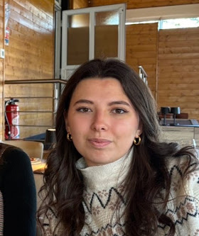

Au cours de ma formation, j'ai eu l'occasion de travailler sur différents projets mêlant réseaux, systèmes, développement et nouvelles technologies.
Réseaux & Télécommunications
Conception, configuration et dépannage d'infrastructures réseau.
PORTFOLIO — 2026
Étudiante en troisième année de BUT Réseaux & Télécommunications, parcours Réseaux Opérateurs et Multimédia (ROM).
SYSTEM.INIT()
maelys@portfolio:~$ whoami
Etudiante en BUT R&T
maelys@portfolio:~$ skills
Networking | Systems | IT
maelys@portfolio:~$ _

01 / À PROPOS
Passionnée par les technologies et les environnements informatiques, je développe mes compétences dans les domaines des réseaux, des systèmes et des infrastructures.
Actuellement en troisième année de BUT Réseaux & Télécommunications à l'IUT de Colmar, parcours Réseaux Opérateurs et Multimédia (ROM), je cherche constamment à approfondir mes connaissances et à découvrir de nouvelles technologies.
Mon alternance chez CIRTEL me permet de confronter mes connaissances aux réalités du terrain, notamment à travers des missions de support informatique, d'administration systèmes et réseaux et de déploiement de solutions IT.
02 / SAVOIR-FAIRE
Des compétences développées au fil de ma formation, de mes projets techniques et de mon expérience professionnelle.
Conception, configuration et dépannage d'infrastructures réseau.
Installation, configuration et administration de systèmes et de services informatiques.
Création de scripts, développement web et manipulation de bases de données.
Création d'environnements virtualisés, déploiement de services et automatisation.
03 / FORMATION
Découverte des fondamentaux des réseaux, des systèmes et des télécommunications.
Explorer ↗ 02Approfondissement des connaissances, administration réseau et déploiement de services.
Explorer ↗ 03Parcours ROM, spécialisation technique et expérience professionnelle en alternance.
Explorer ↗04 / RÉALISATIONS
Au cours de ma formation, j'ai eu l'occasion de travailler sur différents projets mêlant réseaux, systèmes, développement et nouvelles technologies.